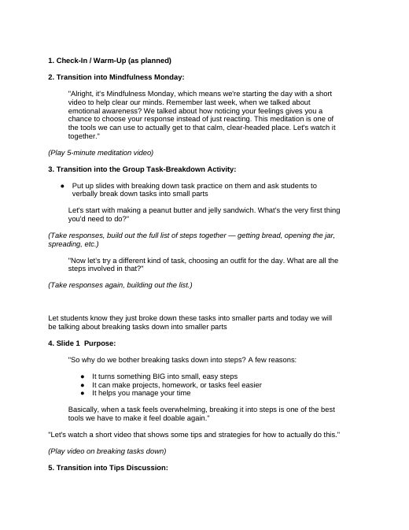
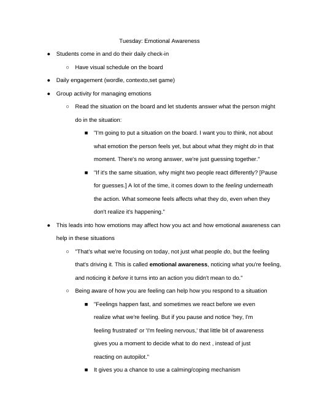
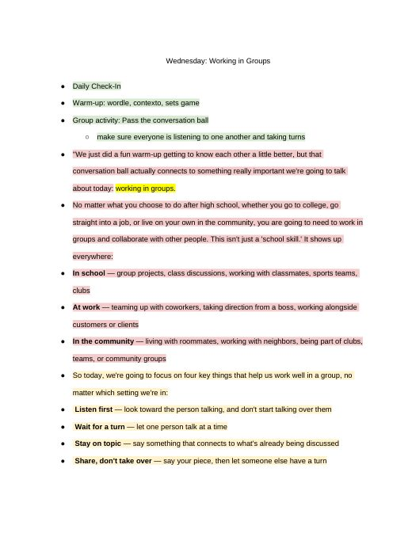

Grace Dittman
Student Teaching Portfolio
Block 2 Math
Block 3 Math
ESS
Lesson Plans
Résumé
Search
Home
›
ESS
›
weeks 4+5
›
Lesson Plans
Lesson Plans
← Activities
Slides →
Files in this folder
Mindfulness & Breaking Down Tasks
ESS9-28LessonPlan.docx
Working in Groups
ESS 9-23 & 9-30LessonPlan.docx
ESSFridayRoutineLessonPlan
ESSFridayRoutineLessonPlan.docx
ESSThursdayLessonPlan
ESSThursdayLessonPlan.docx
Breaking Down Tasks 9
· 1 file

28
28.docx
Emotional Awareness 9
· 1 file

22
22.docx
ESS 9
· 1 file
📁 22 & 9
1 file
Working in Groups 9
· 1 file

23
23.docx
← Activities
Slides →